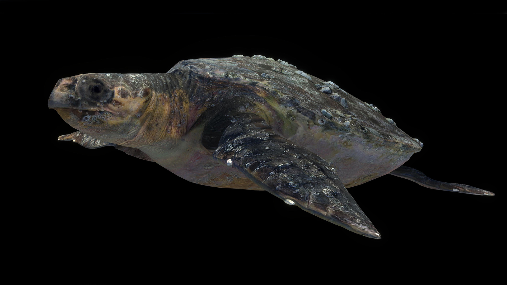
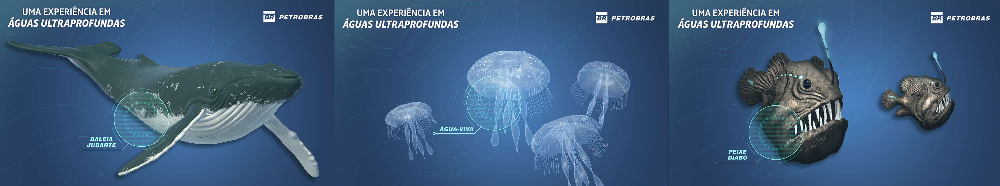
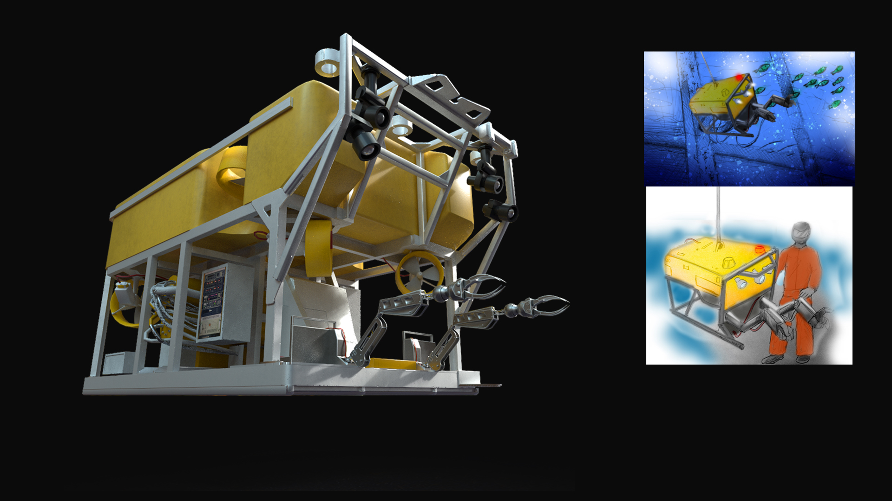
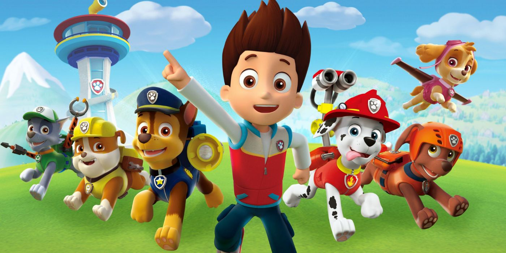
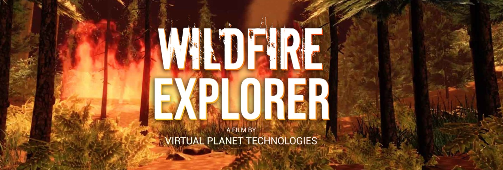
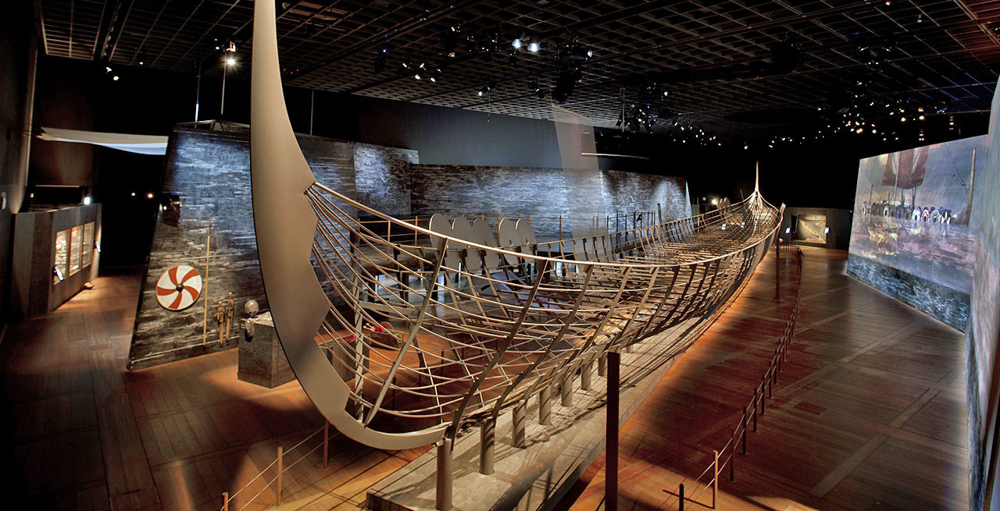
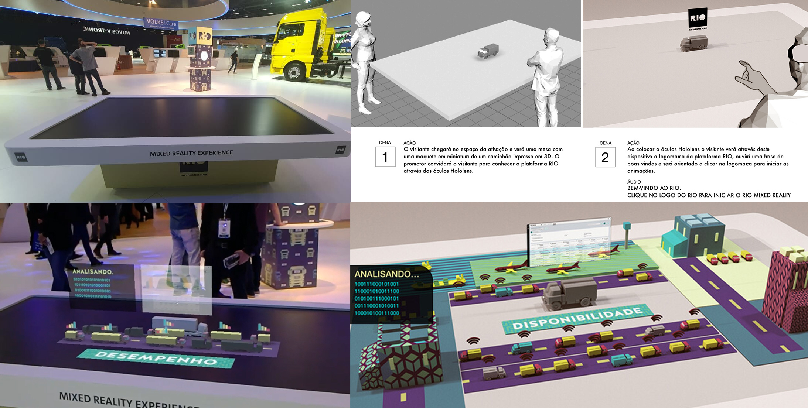
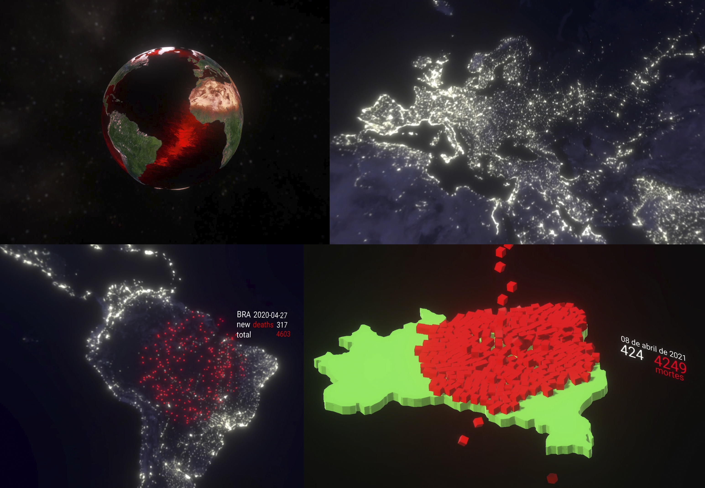
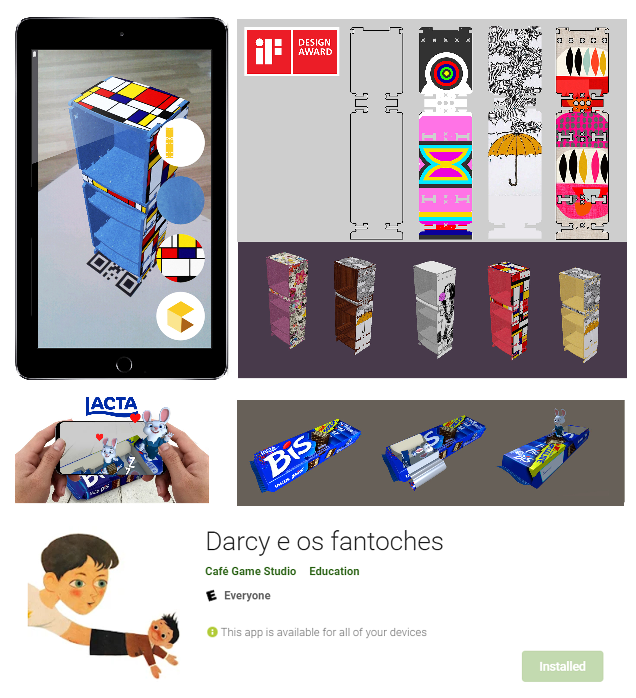
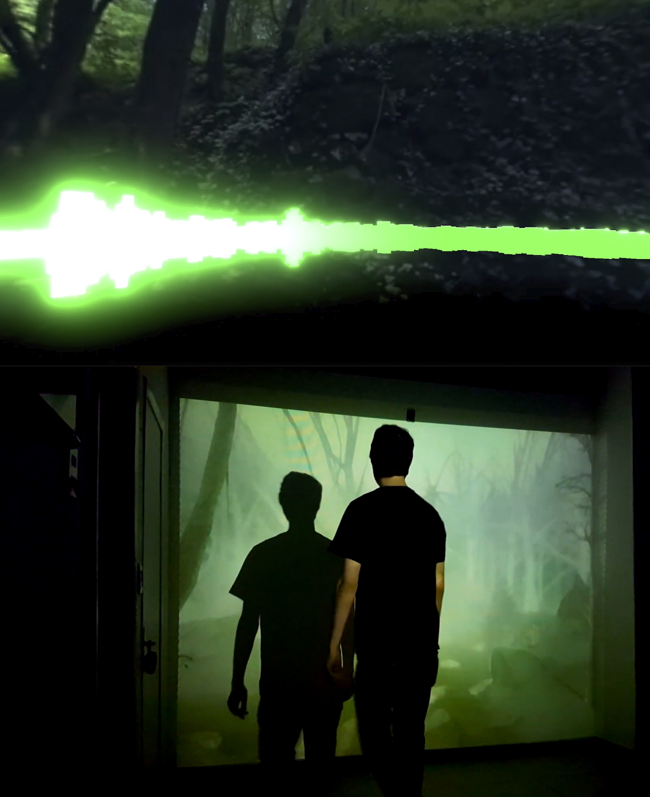

M.Sc. in visual arts living in Brazil, focusing on art and technology research and
development. 10+ years of experience
with digital art, design and production, games, animations, 3D models, augmented reality,
virtual reality,
photogrammetry and technical 3D. 6+ years as professor of game design and game art. I am
proficient in several software such as Maya, Photoshop, Unity, besides other media skills
such as sound editing
and programming. For my
full CV details, please send an e-mail request.
Petrobras - VR
Art Direction, Design and Technical Artist
This virtual experience was conceived for RIO2C, one of the largest technology fairs
in Brazil, by Petrobras, the largest oil company in Brazil and in the world. In this VR, you operate an
interactive ROV (Remotely Operated Vehicle) to complete a mission in ultra-deep waters. At the end of the experience, the participants received
virtual cards of the species they managed to scan during the adventure. This VR also included haptics and some cooling rig to be more immersive.
I had many roles on this project as Art Director, Storyboarding with the client, Technical Artist, Managing Outsourced Art assets, and
making coffee.



Paw Patrol
Client: Messier Games
Developed some 3D models and animations for a game with Microsot Kinect to control Paw Patrol
characters with only
gestures. The project was created for shopping malls in São Paulo, Brazil.

3D models
Senior
I use 3D moddeling in diverse ways, contexts and workflows, from final produts to
storyboarding. I have more than 10 years of experience creating
models, UV mapping, textures, materials and animations for diverse uses
such as technical modeling, photogammetry, 3D printing, GIS
Data Models, among others.
I also work as Game Art professor and freelancer. You can check out
some of my models at Sketchfab.
Wildfire Explorer VR
Virtual Planet Technologies LLC
Commercial VR for global warming education and fire training in
forests in California. My main role was scripting, storyboarding, 3D modeling,
animations, particles and general FX. We used data collected from public
organizations and did some interesting things with them. The big challenge of this project
was to optimize models and shaders for Unity URP.More info here.

Vikings: Beyond the Legend
Virtual Grounds Interactive
Augmented Reality project that works mixed
with the original model of a viking vessel, simulating the crew and
real-time movement of the ship. The project was exhibited in some museums of
science in
United States, such as The Franklin Institute, Philadelphia. My main role was as a
technical
moddeler of the viking ship.

Mixed Reality Experience
RIO - Volkswagen
I was invited to create an experience using Microfone's
HoloLens to demonstrate the logistics flow of
a
new service, based on
real-time information such as the availability of the fleet or internet connection.
My main
role was the script
direction and adaptation of
the metrics for the clients understand the service, as well as storyboarding, art
direction,
3D
modeling and animations. More info here.

Dataviz in Unity
Pandemic experiments with public database
This visual data experiment was performed using data obtained from Our
World in Data
about COVID-19 pandemic in Brazil. More info here.

Augmented Reality
Commercial projects
Developed several projects, including Inoh!ffice,
awarded project in the European
competition IF DESIGN. Lacta - Mondelez project with
several ARs for chocolate boxes and Darcy
and his Puppets, project selected at civil service examination announcement.
In all
of these
projects I
created the main general concept of the product, product design and 2D and 3D art. I
also
did some coding and art team team management.

Nature and Culture
Mixing unexpected data
In my free time, I like to create new media and art projects, having already exhibited in
several places. Presence /
Absence
consists in a real-time projected 3D forest
that changes to a desert field when a sensor detects the presence of a person in the
room. 2
Natures
is a VR experiment that mixes 2 environments in real time, such as a forest in
Aokigahara
with
sounds captured from São Paulo´s traffic. More info about these projects can be
found here.

REAL
FILE - Electronic Language International Festival
Interactive Art select to be displayed at FILE São Paulo. “REAL is an interactive and
conceptual art work. When a button is pressed, a R$1,00 coin falls into a
hole in the ground. Will there be a limit of instantiated coins wasted for the
system
collapses and gameover?".
Download the
exhibition catalog.